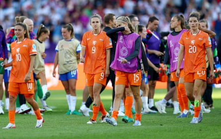

England
Hannah Hampton Distribution was excellent, particularly her superb pass that led to England’s opening goal. 7
Lucy Bronze Much improved from Saturday and showed all her experience with her positioning. 7
Leah Williamson Orchestrated the team solidly from the back and blocked crosses well when called upon. 7
Jess Carter Looked significantly more comfortable at centre-back. Tackled strongly and read the game very well. 8
Alex Greenwood Supremely calm on the ball and composed one-on-one. England have found their best back four lineup. 7
Ella Toone Always offered teammates an option, worked hard and took her goal nicely. Good display. 7
Keira Walsh Took control of midfield and looked like the player we saw at Euro 2022. 7
Georgia Stanway Her emphatic strike was richly deserved. She was terrier-like, never giving the Dutch a moment’s rest. 8
Lauren James She terrified the Netherlands. Took her first goal magnificently. The star of the show. 8
Alessia Russo Her work rate and movement deserved a goal. Unfortunate to have one ruled out again. 7
Lauren Hemp Had the beating of Casparij all night. Confident, skilful and could have had three assists. 7
Substitutes Chloe Kelly (James, 69) England were in cruise control by the time she was brought on, but she did her job well. 6; Beth Mead (Hemp, 76) 6; Grace Clinton (Toone, 76) 6; Aggie Beever-Jones (Russo, 84) 6; Niamh Charles (Bronze, 84) 6.
Deflated Netherlands players reflect on their heavy defeat by England.Photograph: Matthew Childs/Reuters
Netherlands
Daphne van Domselaar Not good, but she did make a couple of decent saves to prevent England from running riot. 5
Kerstin Casparij Struggled against her Manchester City teammate Hemp throughout and had a fairly bad evening. 5
Dominique Janssen Russo gave her the runaround. She may have nightmares about the England striker. 4
Veerle Buurman Looked outclassed by the skill in England’s forward line. One of three players taken off at half-time. 4
Esmee Brugts Could not cope with the flair of James. Hard to remember her winning a duel. 5
Wieke Kaptein Outbattled by Stanway, outrun by Toone and out-thought by Walsh. 5
Jackie Groenen Another Netherlands midfielder who simply could not get into the game. Failed to create enough. 5
Victoria Pelova Looked in excellent form against Wales but could not reproduce it. Never worried England. 5
Chasity Grant Dangerous with her pace early on and did at least try to get in behind. 6
Vivianne Miedema Outplayed by Carter and failed to make an impact before being substituted. 5
Jill Roord Curled over from a half chance but was otherwise relatively quiet as England dominated. 5
Substitutes Caitlin Dijkstra (Brugts, ht) Made a slight difference but was still no match for this confident England. 6; Lineth Beerensteyn (Roord, h-t) Momentarily looked as if she could be the gamechanger but England coped well. 6; Sherida Spitse (Buurman, h-t) One of the Netherlands’ all-time greats, but she is not the player she used to be. 5; Daniëlle van de Donk (Miedema, 66) 6; Damaris Egurrola (Groenen, 85) 6